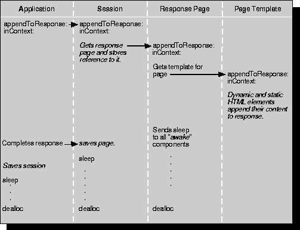

Table of Contents
Table of Contents  Previous Section
Previous Section
Generating the Response
In the final phase of request-response loop (see Figure 24), the response page generates an HTTP response. Generally, the response contains a dynamically generated HTML page. Each element (static and dynamic) that makes up the response page appends its HTML code to the total stream of HTML code that will be interpreted by the client browser.

Figure 24. Generating the Response
Here is the basic sequence of events for generating a response:
- The application object stores the response component indicated by the action method's return value. (This action method was invoked during the second phase of the request-response loop.)
- If the response component is different from the request component, application sends the awake message to the response component.
- The application object sends appendToResponse:inContext: to itself; its implementation simply invokes the session object's appendToResponse:inContext: method.
- The session pushes the response component onto the WOContext stack and sends the response component the appendToResponse:inContext: message.
- The response component, in its implementation of appendToResponse:inContext:, gets the template for the component and sends appendToResponse:inContext: to the template's root object.
- All static and dynamic HTML elements in the response-page template, and in subcomponent templates, receive the appendToResponse:inContext: message. In it, they append to the content of the response the HTML code that represents them. For dynamic elements, this code includes the values assigned to variables.
- When control returns to the session object, the session object asks the WOStatisticsStore to record statistics about the response. WOStatisticsStore sends the session a descriptionForResponse:inContext: message. The session, in turn, sends the response component descriptionForResponse:inContext: message. By default, this method returns the response component's name.
After the response has been generated, but before returning the response to the adaptor, the application object concludes request handling by doing the following:
- It causes the sleep method-the counterpart of awake-to be invoked in all components involved in the cycle (request, response, and subcomponents). As described in the chapter "Managing State", in the sleep method, objects can release resources that don't have to be saved between cycles.
- It requests the session object to save the response page in the page cache.
- It invokes the session object's sleep method.
- It saves the session object in the session store.
- It invokes its own sleep method.
When an Objective-C object is about to be destroyed, its dealloc method is invoked at an undefined point in time after a cycle (indicated by the vertical ellipses in Figure 24). In the dealloc method, the object releases any retained instance variables. In WebScript, this usually happens implicitly; you therefore usually don't need to implement the dealloc method in any objects you write. In Java, objects have automatic garbage collection, so this deallocation step is unnecessary.
Table of Contents  Next Section
Next Section